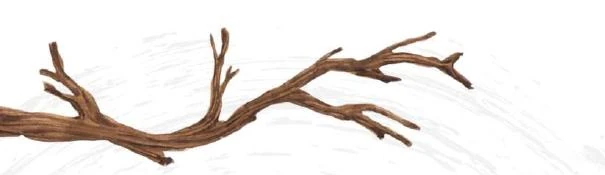

Skip to content
A Spiral Under
Read
Contents
About
Random poem

Opening · 1 poem
Before the seasons
A seed touches ground. Plans scatter. The spiral begins.
01
Prologue
Spinning around
The Biologist
The Silent Cartographer
The Philosopher
The Ethnographer
Loose Leaves